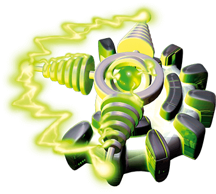

Generatory osłon
Kiedy coś pójdzie nie tak, osłony okazują się bardzo przydatne: chronią statek przed małymi meteorami i lekkim ostrzałem z dział wrogów. Użycie generatora osłon zużywa 1 baterię  .
.
Jeden generator osłon chroni statek z dwóch stron (tych, które odpowiadają zielonemu polu siłowemu). Generator działa z dowolnego miejsca na statku. Jedyne, co ma znaczenie, to strona, w którą jest zwrócony.
Teraz pewnie spodziewasz się, że zasugerujemy Ci posiadanie jak największej liczby generatorów. Nic z tego. Potrzebujesz jedynie dwóch generatorów, o ile są zwrócone w taki sposób, aby chronić wszystkie cztery strony statku. W zasadzie, jeśli jesteś nieustraszony/a (lub masz skłonności samobójcze), możesz polecieć w trasę statkiem pozbawionym jakichkolwiek osłon. Powodzenia.